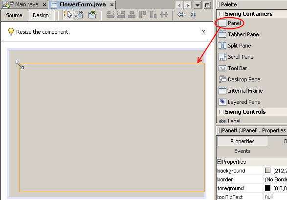

Apache NetBeans
Apache NetBeansLatest release
Передача двоичных данных с помощью приложения веб-службы, часть 5: создание клиента Swing
| This tutorial needs a review. You can edit it in GitHub following these contribution guidelines. |
Целью этого упражнения является создание клиента для веб-службы, которая была создана и развернута ранее, с последующим добавлением графического интерфейса пользователя в этот клиент. Интерфейс служит для вывода на экран изображений, переданных веб-службой в качестве двоичных данных.
Полную версию клиента можно загрузить из каталога примеров NetBeans.
Уроки, представленные в этом учебном курсе

Figure 1. Содержимое этой страницы применимо к IDE NetBeans 7.2, 7.3 и 7.4
Создание клиента приложения
В этом разделе рассматривается создание веб-приложения. В рамках приложения выполняется создание клиента, потребляющего веб-службу, которая была создана и изменена в предыдущих учебных курсах.
Создание приложения
-
Выберите 'Файл' > 'Создать проект' (Ctrl-Shift-N в Windows и Linux, ⌘-Shift-N в ОС Mac). Откроется мастер создания проекта.
-
Выберите "Приложение Java" в категории "Java". Нажмите кнопку "Далее". Появится мастер создания приложения Java. Введите текст
FlowerClientв поле "Имя проекта". Выберите папку проекта и нажмите кнопку "Готово". В среде IDE будет создан новый проект приложения на Java. -
Щелкните правой кнопкой мыши узел проекта
FlowerClientи последовательно выберите в контекстном меню команды "Создать" > "Клиент веб-службы". Появится мастер создания клиента веб-службы. -
Выберите переключатель "URL-адрес WSDL" и вставьте в соответствующее поле URL-адрес файла WSDL. По умолчанию URL-адресом является
http://localhost:8080/FlowerAlbumService/FlowerServiceService?wsdl. URL-адрес можно найти в браузере, выполнив тестирование веб-службы и заменив текст?Testerна?wsdlв конце URL-адреса. Примите все прочие значения по умолчанию, включая пустое имя пакета.

-
Нажмите кнопку "Завершить". В среде IDE выполняется загрузка файла WSDL, добавление заглушек клиента для взаимодействия с веб-службой, а также добавление узлов в проект приложения на Java в окне "Проекты".

Figure 2. Представление проекта, в котором отображается новый клиент веб-службы
Разработка формы JFrame
В этом разделе рассматривается добавление формы JFrame в веб-приложение и проектирование в рамках этого приложения графического интерфейса пользователя с использованием компонентов Swing. В заключение описывается привязка компонентов Swing к коду клиента веб-службы.
При отсутствии необходимости самостоятельного проектирования формы JFrame можно загрузить готовый файл JFrame Java здесь.
-
Щелкните правой кнопкой мыши узел
FlowerClientи выберите пункт "Создать", а затем – "Форма JFrame". Присвойте фрейму имяFlowerFrame. Разместите его в пакетеflowerclient. -
Фрейм
FlowerFrameбудет открыт в редакторе. Откройте палитру (если она еще не открыта). Растяните нижнюю границу фрейма приблизительно на одну треть.

-
Перетащите панель JPanel из раздела "Контейнеры Swing" на палитре в фрейм
FlowerFrame. Разверните панель, чтобы она заполнила все пространство фреймаFlowerFrame.

-
Щелкните правой кнопкой мыши панель в представлении "Проектирование". Выберите в контекстном меню пункт "Изменить имя переменной…". Присвойте панели имя
gardenFlowersPanel.
-
Перетащите метку JLabel из палитры в верхнюю область панели
gardenFlowersPanel. Щелкните метку правой кнопкой мыши и измените имя переменной метки наtitleLabel. Снова щелкните правой кнопкой мыши меткуtitleLabelи выберите пункт "Изменить текст". Измените текст на "Garden Flowers". Можно также изучить свойстваtitleLabelи увеличить шрифт.
-
Перетащите группу кнопок в представление "Проектирование". Примите имя группы кнопок
buttonGroup1, заданное по умолчанию.
-
Перетащите четыре переключателя в горизонтальный ряд под меткой
titleLabel. В свойствах каждого переключателя укажите, что он является компонентом группы кнопокbuttonGroup1. Для других свойств переключателей действительны следующие свойства:
| Переключатели в группе кнопок buttonGroup1 |
|---|
Имя переменной |
Выбрано |
Текст |
asterRadioButton |
true |
Aster |
honeysuckleRadioButton |
false |
Honeysuckle |
roseRadioButton |
false |
Rose |
sunflowerRadioButton |
false |
Sunflower |
-
Перетащите панель с прокруткой в область под переключателями. Разверните панель, чтобы она заполнила всю область по горизонтали и приблизительно две трети свободной области по вертикали. Измените имя переменной панели с прокруткой на
mainScrollPane.
-
Перетащите панели на панель
mainScrollPane. Измените имя переменной панели наmainPanel.
-
В представление 'Конструирование' щелкните правой кнопкой мыши
mainPanelи выберите 'Настроить макет' > 'Макет границ'.
-
Перетащите кнопку на панель
mainPanel. Поскольку панельmainPanelимеет границы, кнопка автоматически заполняет все пространство панели. Измените имя переменной кнопки наmainPictureButton, и введите для кнопки текст "Waiting for picture…"
-
Перетащите еще одну панель с прокруткой в область под панелью
mainScrollPane. Разверните новую панель с прокруткой, чтобы она заполнила все свободное пространство. Измените имя переменной новой панели с прокруткой наthumbnailScrollPane.
-
Перетащите панель из палитры на панель
thumbnailScrollPane. Измените имя переменной панели наthumbnailPanel. Установите в качестве формата панелиthumbnailPanelформат сетки.
-
Перетащите четыре кнопки на панель
thumbnailPanel. Поскольку панельthumbnailPanelимеет формат сетки, кнопки автоматически становятся одинакового размера и полностью заполняют панель. Свойства кнопок Кнопки на панели thumbnailPanel
Имя переменной |
Текст |
asterButton |
Ожидание… |
honeysuckleButton |
Ожидание… |
roseButton |
Ожидание |
sunflowerButton |
Ожидание |
Форма JFrame готова. На данный момент файл FlowerFrame выглядит следующим образом.

Figure 3. Завершенный фрейм Flower, в которой отображается текст кнопок вместо изображений
Привязка компонентов JFrame
В этом разделе рассматривается инициализация компонентов в конструкторе и привязка компонентов к прослушивателям. Прослушиватели используются для вызова кода, который отвечает за отображение цветов.
[[Инициализация компонентов]]
[[В этом разделе описывается заполнение конструктора FlowerFrame
]]
-
Перейдите в представление "Исходный код" в редакторе. Найдите начало тела класса
FlowerFrameи конструкторFlowerFrame.

-
В верхней части тела класса фрейма
FlowerFrameсоздайте над строкой конструктора массив строк с названиями всех цветов.
protected static final String[] FLOWERS = {"aster", "honeysuckle", "rose", "sunflower"};-
Добавьте между массивом строк FLOWERS и конструктором строку, инициализирующую элемент
+java.util.Map+с именемflowers. Карта ссылок принимает объектStringи устанавливает его соответствие с объектомImage.
private Map<String, Image> flowers;-
Добавьте операторы импорта для
java.util.Mapиjava.awt.Image. -
Добавьте код в конструктор
FlowerFrame, чтобы связать определенный объектImageс определенным объектомStringдля определенного экземпляра карты ссылокflowers.
public FlowerFrame(Map<String, Image> flowers) {
this.flowers = flowers;
for (String flower:FLOWERS) {
flowers.put(flower,null);
}
initComponents();
}-
Инициализируйте прослушиватели
ItemListenerдля переключателей, а также прослушивателиActionListenerдля четырех кнопок цветов и установите заголовок по умолчанию.
public FlowerFrame(Map<String, Image> flowers) {
this.flowers = flowers;
for (String flower:FLOWERS) {
flowers.put(flower,null);
}
initComponents();
setTitle("Garden Flowers [waiting for picture]");
ItemListener rbListener = new RBListener();
asterRadioButton.addItemListener(rbListener);
honeysuckleRadioButton.addItemListener(rbListener);
roseRadioButton.addItemListener(rbListener);
sunflowerRadioButton.addItemListener(rbListener);
ActionListener bListener = new ButtonListener();
asterButton.addActionListener(bListener);
honeysuckleButton.addActionListener(bListener);
roseButton.addActionListener(bListener);
sunflowerButton.addActionListener(bListener);
}-
Добавьте операторы импорта для
+java.awt.event.ItemListener+и+java.awt.event.ActionListener+.
Конструктор готов. В коде выводятся сообщения об ошибках, поскольку код не содержит классы RBListener и ButtonListener . Эти два класса представляют собой реализации прослушивателей ItemListener и ActionListener , соответственно. Запись этих классов в код рассматривается в следующем разделе.
[[Изображения с цветами]]
[[В этом разделе рассматривается написание пользовательских прослушивателей для переключателей и кнопок цветов. Также рассматривается написание метода, который определяет цветок, выбираемый при нажатии кнопки, и получает объект Image цветка на карте ссылок flowers . В завершение описывается создание метода, который вызывается посредством класса Main и получает объект Image для каждого эскиза.
]]
-
Найдите метод
public static void main(String args[])в теле классаFlowerFrame. Удалите этот метод и его документацию. (Вместо него в приложении будет использован классMain.)-
Напишите вместо метода
mainпользовательский прослушивательItemListenerдля переключателей. Этот прослушиватель служит для отображения нового изображения цветка при выборе переключателя.
-
private class RBListener implements ItemListener {
public void itemStateChanged(ItemEvent e) {
showFlower();
}
}-
Добавьте оператор импорта для
+java.awt.event.ItemEvent+. -
Запишите под пользовательским прослушивателем
ItemListenerпользовательский прослушивательActionListenerдля четырех кнопок цветов. При нажатии кнопки прослушиватель выбирает соответствующий переключатель:
private class ButtonListener implements ActionListener {
public void actionPerformed(ActionEvent e) {
if (e.getSource() == asterButton) asterRadioButton.setSelected(true);
else if (e.getSource() == honeysuckleButton) honeysuckleRadioButton.setSelected(true);
else if (e.getSource() == roseButton) roseRadioButton.setSelected(true);
else if (e.getSource() == sunflowerButton) sunflowerRadioButton.setSelected(true);
}
}-
Добавьте оператор импорта для
+java.awt.event.ActionEvent+.
-
Напишите под пользовательским прослушивателем
ActionListenerметодshowFlower. Этот метод определяет выбранный переключатель и получает объектImageдля соответствующего цветка из карты ссылокflowers.
void showFlower() {
Image img = null;
if (asterRadioButton.isSelected()) {
img = flowers.get("aster");
if (img != null) {
mainPictureButton.setIcon(new ImageIcon(img));
setTitle("Garden Flowers [Aster]");
}
} else if (honeysuckleRadioButton.isSelected()) {
img = flowers.get("honeysuckle");
if (img != null) {
mainPictureButton.setIcon(new ImageIcon(img));
setTitle("Garden Flowers [Honeysuckle]");
}
} else if (roseRadioButton.isSelected()) {
img = flowers.get("rose");
if (img != null) {
mainPictureButton.setIcon(new ImageIcon(img));
setTitle("Garden Flowers [Rose]");
}
} else if (sunflowerRadioButton.isSelected()) {
img = flowers.get("sunflower");
if (img != null) {
mainPictureButton.setIcon(new ImageIcon(img));
setTitle("Garden Flowers [Sunflower]");
}
}
if (img == null) {
mainPictureButton.setIcon(null);
setTitle("Garden Flowers [waiting for picture]");
} else mainPictureButton.setText("");
}-
Добавьте оператор импорта для
+javax.swing.ImageIcon+.
-
Напишите метод
setThumbnails. Этот метод получает изображение для каждого эскиза из карты ссылокflowers. Метод вызывается посредством классаMain.
void setThumbnails(Map<String, Image> thumbs) {
Image img = thumbs.get("aster");
if (img != null) {
asterButton.setIcon(new ImageIcon(img));
asterButton.setText("");
}
img = thumbs.get("honeysuckle");
if (img != null) {
honeysuckleButton.setIcon(new ImageIcon(img));
honeysuckleButton.setText("");
}
img = thumbs.get("rose");
if (img != null) {
roseButton.setIcon(new ImageIcon(img));
roseButton.setText("");
}
img = thumbs.get("sunflower");
if (img != null) {
sunflowerButton.setIcon(new ImageIcon(img));
sunflowerButton.setText("");
}
}-
Исправьте операторы импорта
FlowerFrame, если они не были исправлены ранее при вставке в код. Можно исправить все ошибки одновременно, щелкнув правой кнопкой мыши в редакторе и выберите 'Исправить выражения импорта' в контекстном меню. Ниже представлен полный список операторов импорта:
import java.awt.Image;import java.awt.event.ActionEvent;import java.awt.event.ActionListener;import java.awt.event.ItemEvent;import java.awt.event.ItemListener;import java.util.Map;import javax.swing.ImageIcon;Конструктор FlowerFrame готов.
[[Создание кода класса Main]]
[[В этом разделе описывается завершение кода класса Main для отображения FlowerFrame , подключения к веб-службе и вызова операций веб-службы.
-
Откройте класс
Main.javaв редакторе.

-
В теле класса инициализируйте переменную
intперед методомmainдля числа загруженных изображений.
private static int downloadedPictures;-
Создайте в теле метода
mainхранилищеHashMapдля четырех изображений цветов и второе хранилищеHashMapдля четырех эскизов.
final Map<String,Image> flowers = new HashMap<String,Image>(4);
final Map<String,Image> thumbs = new HashMap<String,Image>(4);-
Добавьте операторы импорта
java.awt.Image,java.util.Mapиjava.util.HashMap.
-
Добавьте в тело метода
mainкод для отображенияFlowerFrame.// Show the FlowerFrame.
final FlowerFrame frame = new FlowerFrame(flowers);
frame.setVisible(true);-
Добавьте в тело метода
mainкод для подключения клиента к веб-службе.// The client connects to the service with this code.
FlowerServiceService service = new FlowerServiceService();
final FlowerService port = service.getFlowerServicePort();-
Добавьте операторы импорта для
org.flower.service.FlowerServiceиorg.flower.service.FlowerServiceService.
-
Добавьте в тело метода
mainкод для создания массива четырех потоковRunnableи вызова операцииgetFlowerвеб-службы в каждом потоке.*// The web service getFlower operation
Runnable[] tasks = new Runnable[4];
for (int i=0; i<4;i++) {
final int index = i;
tasks[i] = new Runnable() {
public void run() {
try {
*// Call the getFlower operation
// on the web service:*
Image img = port.getFlower(FlowerFrame.FLOWERS[index]);
System.out.println("picture downloaded: "+FlowerFrame.FLOWERS[index]);
*// Add strings to the hashmap:*
flowers.put(FlowerFrame.FLOWERS[index],img);
*// Call the showFlower operation
// on the FlowerFrame:*
frame.showFlower();
} catch (IOException_Exception ex) {
ex.printStackTrace();
}
downloadedPictures++;
}
};
new Thread(tasks[i]).start();
}-
Добавьте оператор импорта для
org.flower.service.IOException_Exception.
-
Добавьте в тело метода
mainкод для вызова операцииgetThumbnailsвеб-службы в отдельном потоке.*// The web service getThumbnails operation is called
Runnable thumbsTask = new Runnable() {
public void run() {
try {
while (downloadedPictures < 4) {
try {Thread.sleep(100);} catch (InterruptedException ex) {}
}
*// Call the getThumbnails operation
// on the web service:*
List<Image> images = port.getThumbnails();
System.out.println("thumbs downloaded");
if (images != null && images.size() == 4) {
for (int i=0;i<4;i++) {
thumbs.put(FlowerFrame.FLOWERS[i],images.get(i));
}
frame.setThumbnails(thumbs);
}
} catch (IOException_Exception ex) {
ex.printStackTrace();
}
}
};
new Thread(thumbsTask).start();-
Исправьте операторы импорта в
Main.java, если они не были исправлены при вставке в код. Можно исправить все ошибки одновременно, щелкнув правой кнопкой мыши в редакторе и выберите 'Исправить выражения импорта' в контекстном меню. Будет предоставлен список классов List для импорта; выберитеjava.util.List. Ниже представлен полный список операторов импорта:
import flower.album.FlowerService;import flower.album.FlowerService_Service;import flower.album.IOException_Exception;import java.awt.Image;import java.util.HashMap;import java.util.List;import java.util.Map;Класс Main готов.
public class Main {
private static int downloadedPictures;
public static void main(String[] args) {
final Map<String,Image> flowers = new HashMap<String,Image>(4);
final Map<String,Image> thumbs = new HashMap<String,Image>(4);
*// Show the FlowerFrame.*
final FlowerFrame frame = new FlowerFrame(flowers);
frame.setVisible(true);
* // The client connects to the service with this code.*
FlowerService_Service service = new FlowerService_Service();
final FlowerService port = service.getFlowerServicePort();
Runnable[] tasks = new Runnable[4];
*// The web service getFlower operation
// is called 4 times, each in a separate thread.
// When the operation finishes the picture is shown in
// a specific button.*
for (int i=0; i<4;i++) {
final int index = i;
tasks[i] = new Runnable() {
public void run() {
try {
*// Call the getFlower operation
// on the web service:*
Image img = port.getFlower(FlowerFrame.FLOWERS[index]);
System.out.println("picture downloaded: "+FlowerFrame.FLOWERS[index]);
*// Add strings to the hashmap:*
flowers.put(FlowerFrame.FLOWERS[index],img);
*// Call the showFlower operation
// on the FlowerFrame:*
frame.showFlower();
} catch (IOException_Exception ex) {
ex.printStackTrace();
}
downloadedPictures++;
}
};
new Thread(tasks[i]).start();
}
*// The web service getThumbnails operation is called
// in a separate thread, just after the previous four threads finish.
// When the images are downloaded, the thumbnails are shown at
// the bottom of the frame.*
Runnable thumbsTask = new Runnable() {
public void run() {
try {
while (downloadedPictures < 4) {
try {Thread.sleep(100);} catch (InterruptedException ex) {}
}
*// Call the getThumbnails operation
// on the web service:*
List<Image> images = port.getThumbnails();
System.out.println("thumbs downloaded");
if (images != null && images.size() == 4) {
for (int i=0;i<4;i++) {
thumbs.put(FlowerFrame.FLOWERS[i],images.get(i));
}
frame.setThumbnails(thumbs);
}
} catch (IOException_Exception ex) {
ex.printStackTrace();
}
}
};
new Thread(thumbsTask).start();
}
}Приложение клиента готово. Код приложения взаимодействует с веб-службой, делегируемой в модуль EJB для вывода соответствующих изображений. Щелкните приложение правой кнопкой и выберите команду "Выполнить". Приложение Swing откроется, и через некоторое время диалоговое окно приложения заполнится изображениями, полученными из веб-службы. Если появляются не все изображения, необходимо очистить и построить проект FlowerService, а затем снова запустить его . Обратите внимание, что изображение в основном фрейме можно заменить, выбрав переключатель или нажав на эскиз.
]]
Для отправки комментариев и предложений, получения поддержки и новостей о последних разработках, связанных с Java EE IDE NetBeans присоединяйтесь к списку рассылки nbj2ee@netbeans.org.